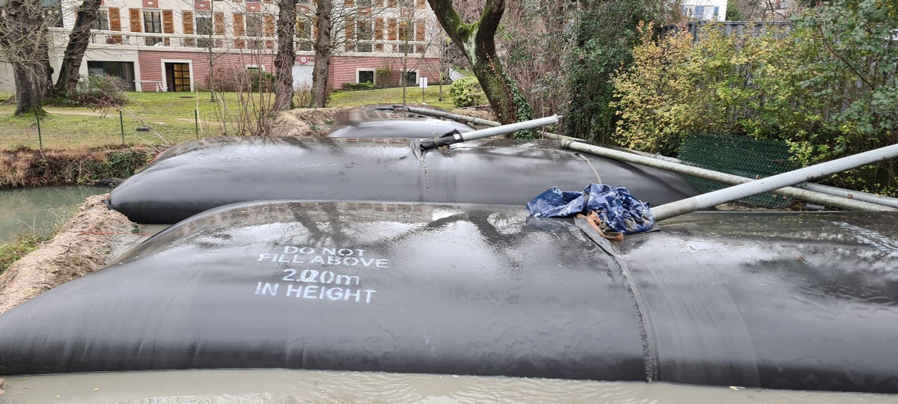

Hydrocurage – Curage par aspiration
La vase et les sédiments sont mis en suspension par injection d'eau à haute pression, puis aspirés directement par pompe. Technique sans mise à sec, adaptée aux étangs, douves, lagunes et plans d'eau difficiles d'accès.
- Curage sans vidange du plan d'eau
- Adapté aux étangs, douves, lagunes et mares
- Résultat rapide avec impact minimal sur les berges
- Gestion des boues par géotubes ou bassin de décantation
- Retour d'eau filtrée dans le plan d'eau en continu
- Valorisation agricole des sédiments séchés
Bon à savoir
L'hydrocurage ne requiert aucune mise à sec. Le plan d'eau reste en eau pendant toute l'intervention, ce qui limite les perturbations pour la faune aquatique et réduit considérablement les délais de chantier.
Voir le processus complet
-
Création du bassin de décantation (géotubes)
Des géotubes — tubes en géotextile de grande dimension — sont installés en périphérie du chantier. Ils constituent le bassin récepteur des boues. Leur membrane filtrante retient les sédiments tout en laissant passer l'eau.

-
Pompage de la vase
Une pompe à vase submersible est placée dans l'étang. De l'eau est injectée sous pression pour fluidifier les sédiments. La mixture eau/vase est pompée en continu vers les géotubes.
-
Décantation dans les géotubes
À l'intérieur des géotubes, les sédiments se déposent et s'accumulent. La membrane géotextile filtre l'eau qui traverse et ressort clarifiée.
-
Retour d'eau propre dans l'étang
L'eau filtrée est réinjectée dans le plan d'eau en permanence. Ce cycle fermé évite toute perte d'eau et maintient le niveau du plan d'eau pendant le chantier.
-
Séchage de la vase
Une fois le pompage terminé, la vase reste dans les géotubes. Le séchage naturel (plusieurs semaines) réduit le volume jusqu'à 70 %. La vase perd son eau de façon contrôlée.
-
Épandage agricole
La vase séchée, riche en matières organiques et nutriments, est valorisée comme amendement agricole. Elle est évacuée et épandue sur des parcelles à proximité, avec les autorisations nécessaires.
Faucardage & végétation aquatique
Roseaux, jussies, nénuphars, myriophylles… Sans intervention, ces espèces colonisent un plan d'eau entier en quelques saisons. Nos bateaux faucardeurs et engins spécialisés coupent et extraient mécaniquement les végétaux directement depuis l'eau.
- Identification et cartographie des espèces présentes
- Coupe et extraction mécanique des végétaux
- Traitement des espèces invasives (jussie, myriophylle du Brésil)
- Suppression des nénuphars et plantes flottantes
- Plan d'entretien annuel ou bisannuel sur mesure
- Intervention sans mise à sec du plan d'eau
Bon à savoir
La jussie et le myriophylle du Brésil sont des espèces exotiques envahissantes (EEE) dont le transport est réglementé. Nos équipes assurent une gestion conforme avec traçabilité complète des végétaux collectés.
Broyage de roseaux
Nos chenillettes broyeuses à larges chenilles interviennent là où les engins classiques ne peuvent pas aller : zones marécageuses, roselières denses, berges inondées. Leur faible pression au sol préserve les milieux sensibles.
- Broyage de roselières sur terrain marécageux
- Fauchage de roseaux avec ou sans export des végétaux
- Pression au sol minimale (chenilles larges)
- Accès aux secteurs inaccessibles aux engins classiques
- Adaptable à toutes tailles de chantier
- Entretien préventif ou curatif
Bon à savoir
Le broyage de novembre à mars est recommandé pour respecter les périodes de nidification des oiseaux des zones humides. En zone Natura 2000, une autorisation préalable peut être requise — nous vérifions avant chaque chantier.

Curage mécanique
Extraction directe de la vase et des sédiments par pelle amphibie ou drague. Technique adaptée aux plans d'eau fortement envasés ou de grande superficie, avec ou sans mise à sec préalable selon la configuration du site.
- Curage par pelle amphibie sur chenilles marais
- Drague aspirante pour les étangs profonds
- Avec ou sans mise à sec préalable
- Gestion et valorisation des sédiments extraits
- Accompagnement des démarches Loi sur l'eau
- Remise en eau progressive et suivi post-chantier
Bon à savoir
Le curage est soumis à la Loi sur l'eau. Selon le volume extrait et la nature du cours d'eau, une déclaration préalable ou une autorisation préfectorale peut être obligatoire. ETS Vandaele accompagne ses clients dans toutes les démarches.
Technique avec mise à sec vs curage en eau
Curage avec mise à sec
- Idéal pour les grands volumes de vase
- Accès facilité au fond de l'étang
- Extraction plus efficace et plus rapide
- Nécessite un plan de gestion de l'eau
- Période idéale : automne-hiver
Curage drague (en eau)
- Pas de vidange nécessaire
- Moins perturbant pour la faune
- Idéal pour les grandes surfaces
- Efficace sur les vases fluides
- Possible toute l'année

Défenses de berges
L'érosion des berges est constante : vagues, crues, gel, passages d'animaux. Sans protection, une rive peut reculer de plusieurs centimètres par an. Nos solutions s'adaptent à la nature du sol, au contexte hydraulique et à l'esthétique de votre site.
- Enrochement naturel (blocs calcaires, granite, grès)
- Palplanches bois, acier ou PVC
- Gabions et matelas de pierres
- Géotextile et fixation de talus
- Fascines et techniques de génie végétal
- Végétalisation et ensemencement des berges réparées
Bon à savoir
L'enrochement naturel associé à une végétalisation de berge est la solution la plus durable et la plus écologique. Un géotextile posé en dessous empêche l'affouillement des blocs sur le long terme.
Broyage forestier
Débroussaillage et broyage de végétation ligneuse dense en bords de berges ou zones humides boisées. Nos engins adaptés interviennent en terrain difficile, y compris en sol gorgé d'eau ou en forte pente.
- Broyage de taillis, ronciers, arbustes envahissants
- Intervention en lisière de plans d'eau boisés
- Terrain en pente ou sol gorgé d'eau
- Nettoyage de berges avant travaux de consolidation
- Débroussaillage de grandes surfaces
- Option export des matières disponible
Bon à savoir
Le broyage forestier est souvent la première étape avant une défense de berges ou un curage : il dégage l'accès au plan d'eau et permet à nos engins de travailler efficacement sur la rive.

Travaux dans les marais
Les milieux marécageux demandent un matériel spécifique et une expertise particulière. Nos engins à chenilles larges interviennent pour l'entretien et la restauration de fossés, canaux et zones humides.
- Curage de fossés et canaux de drainage
- Recalibrage et reprofilage de canaux agricoles
- Entretien de roselières et zones humides
- Nettoyage et débroussaillage en terrains difficiles
- Travaux sur zones Natura 2000 (protocole adapté)
- Pression au sol minimale — sols sensibles préservés
Bon à savoir
Nos chenillettes exercent une pression au sol inférieure à 0,2 kg/cm² — moins qu'un adulte qui marche. Elles peuvent travailler sur des terrains entièrement gorgés d'eau sans s'enliser.

Bathymétrie & diagnostic
Avant tout chantier, nous réalisons un relevé bathymétrique de votre plan d'eau. Cette cartographie précise des profondeurs est la base d'un diagnostic fiable et d'un devis juste — elle évite les mauvaises surprises en cours de chantier.
- Relevé bathymétrique par sondeur à ultrasons
- Cartographie 3D des zones d'envasement
- Analyse et prélèvement des sédiments
- Diagnostic de l'état des berges et des ouvrages
- Rapport complet avec recommandations priorisées
- Estimation précise du volume à extraire
Bon à savoir
La bathymétrie est notre étape incontournable avant tout curage. Elle cible les zones d'envasement, calcule le volume exact à extraire et permet de choisir la technique la plus adaptée. Elle est incluse dans notre diagnostic de chantier.